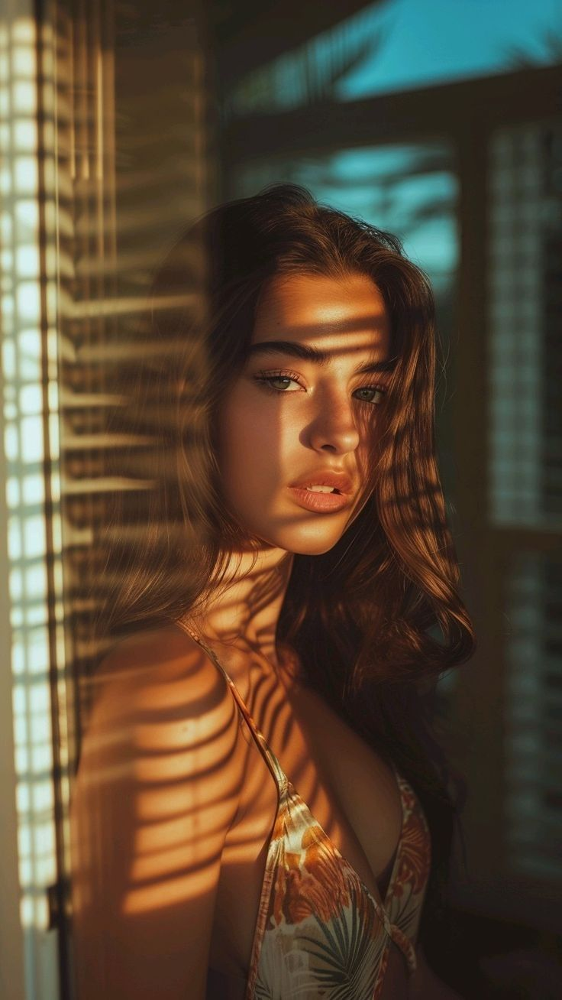
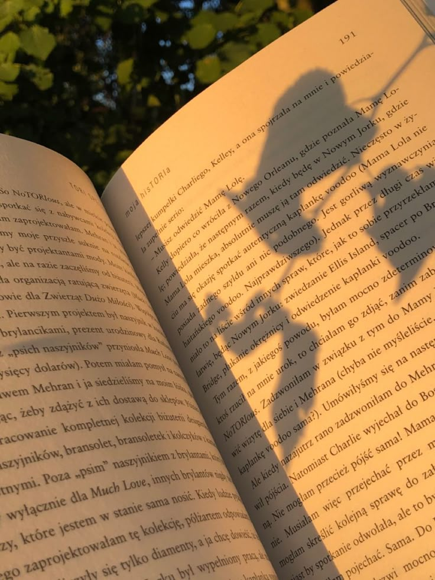
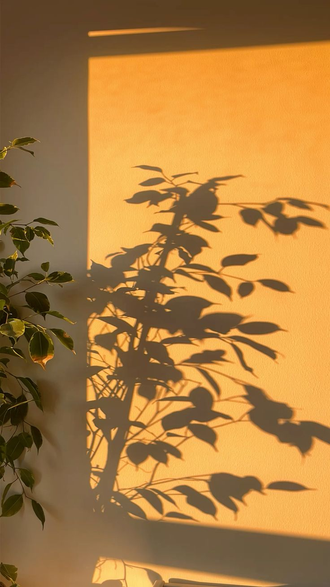
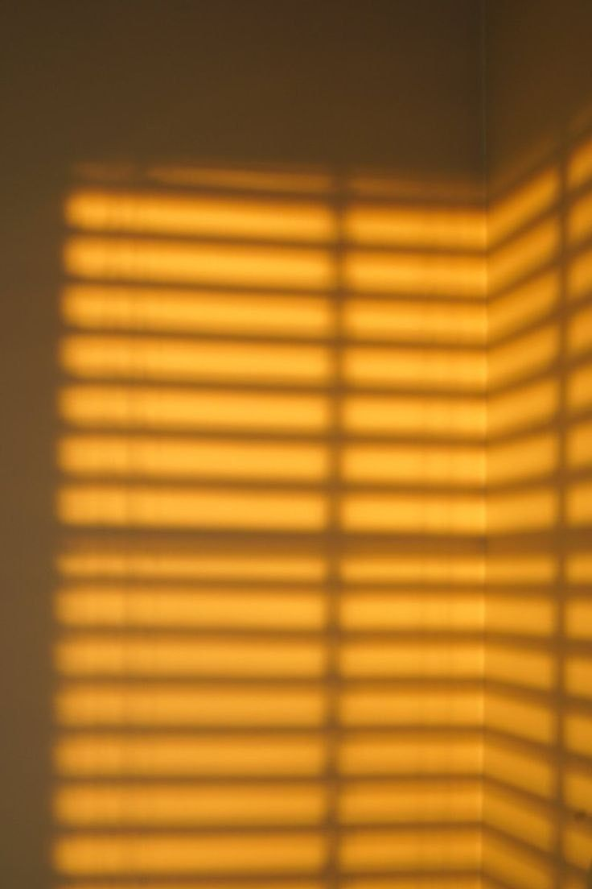
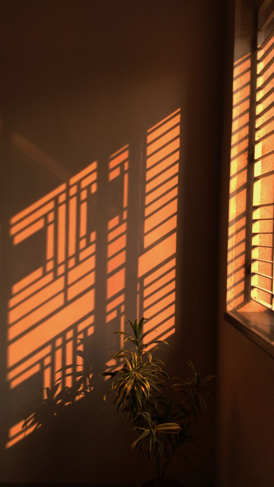

i've been taking more photos lately and the thing nobody tells you about photography is that it's really about paying attention to light.
people think it's about the subject. about finding beautiful things to point your camera at. they're wrong. or not wrong exactly but wrong about what the work actually is. the work is light. understanding how it moves. how it changes. how the exact same scene looks completely different if you wait three hours for the sun to move or move yourself ten degrees to the left.
i noticed this in abuja specifically because the light here is intense. it's not subtle. it doesn't ask permission. it just hits you directly and changes the entire feeling of a space. i've been in a perfectly ordinary room at 2pm where the light coming through the window made everything feel tinged with something. melancholy maybe. or urgency. the light makes a choice about how you're supposed to feel.





and then at 6pm the same room with the same objects looks gentle. almost peaceful. like it's giving you permission to slow down. that's the actual work. learning to see what the light is doing and finding the moment where what you want to say matches what the light is already saying.
i've been doing acrylic painting too and it's the same thing. you can have perfect technique and perfect color selection but if you don't understand light — how it sits on surfaces, how it reveals things, how it creates shadow and depth — the painting will always feel flat. most of the paintings i do fail because i'm thinking too much about the object i'm trying to represent instead of thinking about how light is moving across that object.
once you start seeing that way you can't turn it off. i was somewhere recently and the light hit someone's face in a specific way and i had this moment where i wanted to photograph it but also wanted to just sit with it. ended up doing neither. sometimes the moment is too good to interrupt with the machinery of trying to capture it. but i saw it. that's the work. that's always the work.
← Back to Blog